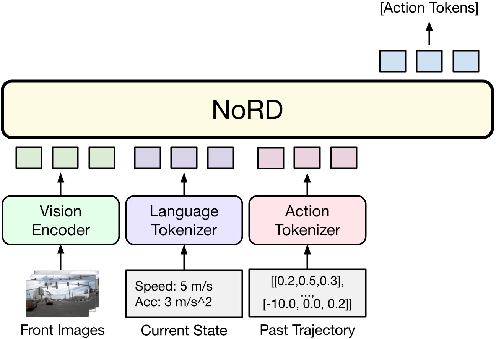
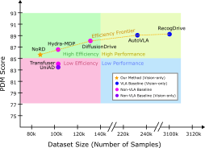
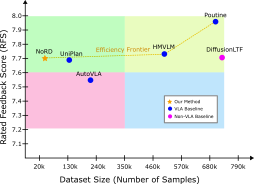
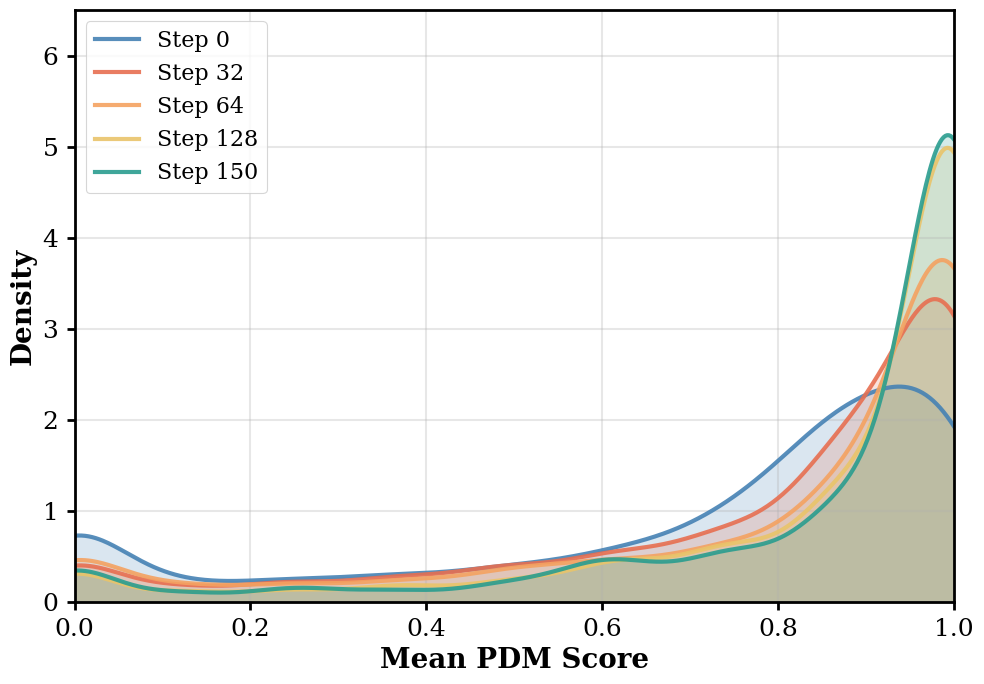
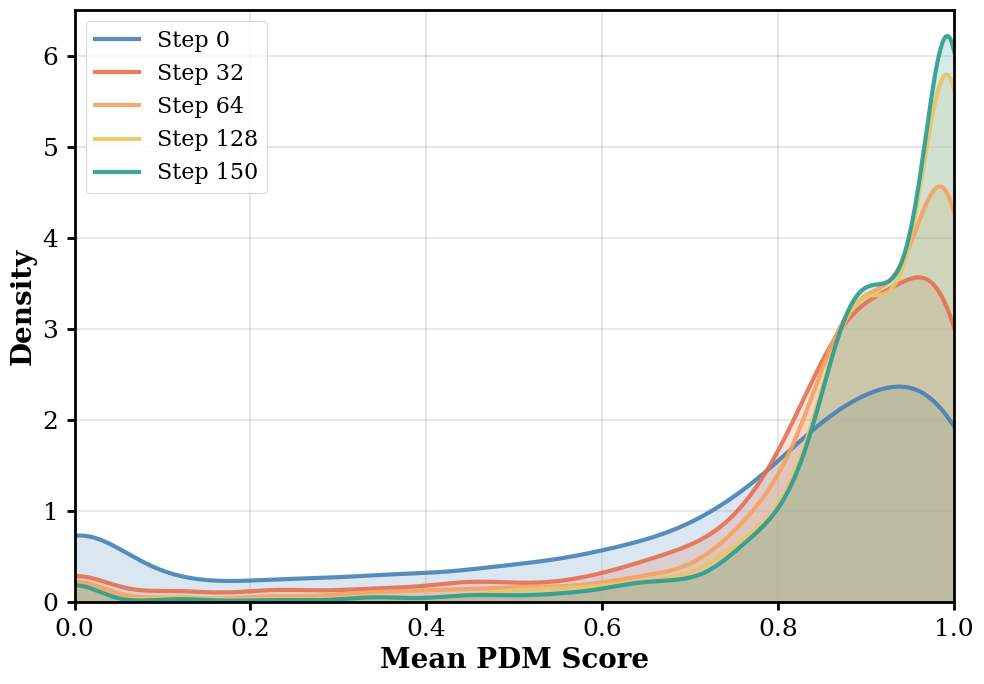
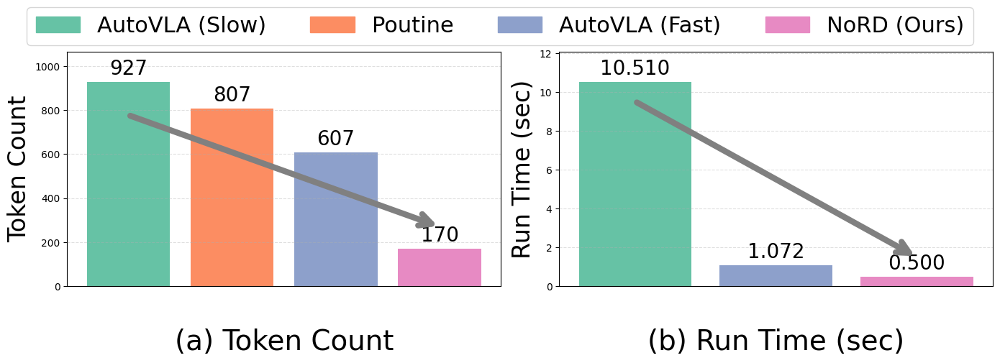
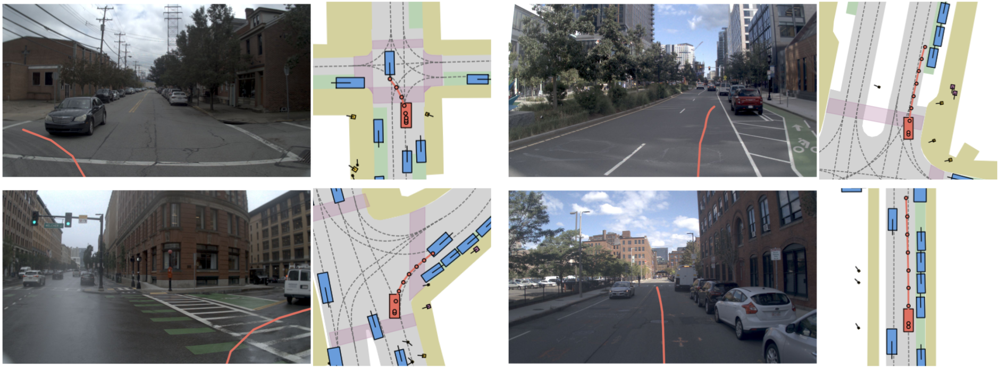
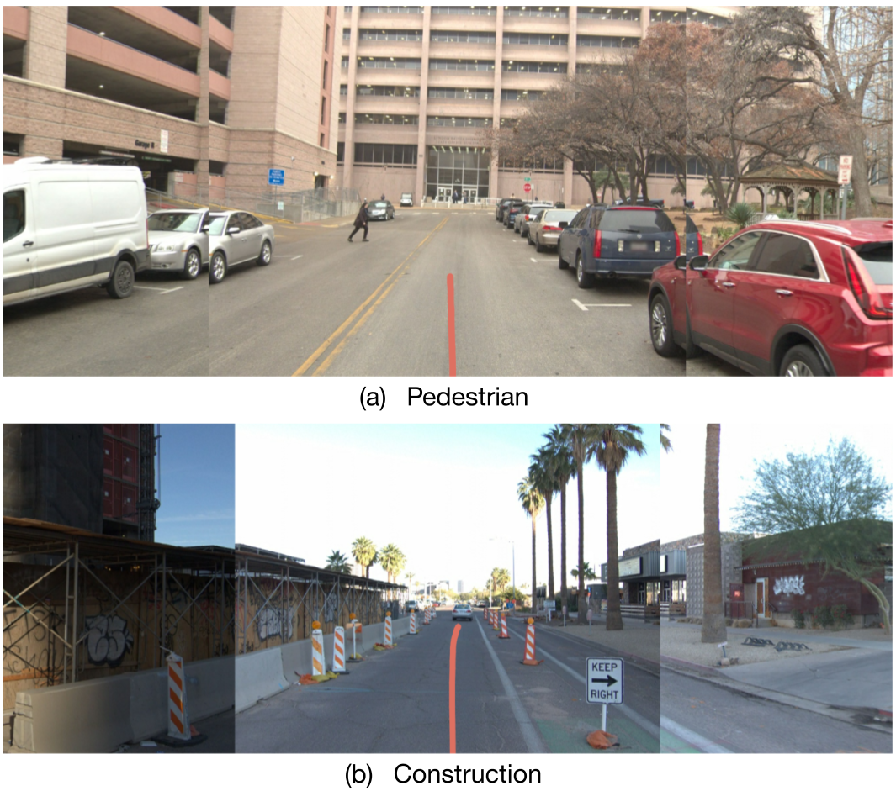

Vision-Language-Action (VLA) models are advancing autonomous driving by replacing modular pipelines with unified end-to-end architectures, but they remain bottlenecked by two expensive requirements: massive dataset collection and dense reasoning annotations. We challenge these dependencies with NoRD (No Reasoning for Driving).
NoRD achieves competitive performance using <60% of the data and zero reasoning annotations, yielding a 3× reduction in token usage. Furthermore, we identify that standard Group Relative Policy Optimization (GRPO) fails to effectively optimize policies trained on such minimal data due to difficulty bias—a flaw that disproportionately penalizes reward signals from high-variance, complex driving scenarios.
To overcome this, NoRD integrates Dr. GRPO to mitigate difficulty bias and stabilize learning. Consequently, NoRD delivers strong performance on the Waymo and NAVSIM benchmarks at a fraction of the traditional data and compute cost, pushing the boundaries of efficient VLA training.
NORD operates directly on raw sensor data and kinematic states to directly predict future trajectories, without intermediate language reasoning traces. The inputs include multi-view RGB images (front, front-left, front-right), past trajectory tokens, current speed, and acceleration. NORD directly predicts the future ego-trajectory at 10 Hz using a k-disc tokenized vocabulary.

Model architecture of NORD. NORD directly predicts action tokens without intermediate reasoning traces.
NoRD balances the trade-off between performance and data efficiency. While state-of-the-art Vision-Language-Action models depend on massive, multi-dataset mixtures and millions of reasoning tokens, NoRD achieves competitive performance while being reasoning-free and using only a fraction of the training data.

(a) NAVSIM

(b) WaymoE2E
Pareto-optimal curves on two driving benchmarks. NoRD achieves competitive PDM and RFS scores on NAVSIM and WaymoE2E respectively, without large-scale data or reasoning supervision.
Training on small, reasoning-free datasets yields a weak initial policy. In this context, the model can execute basic driving tasks, but complex maneuvers (like sharp turns or avoiding collisions) fail more often than they succeed. When evaluated against sparse and complex driving rewards, successes in challenging scenarios become rare and highly variable. Standard GRPO normalizes advantages by this variance, unintentionally penalizing the "hard" driving scenarios where successes are rare and variance is high. By integrating Dr. GRPO to remove the standard deviation denominator, we mitigate this difficulty bias and allow our weak initial policy to learn effectively from these high-variance rollouts.

Standard GRPO: Heavily penalizes high-variance scenarios.

Dr. GRPO (Ours): Mitigates difficulty bias for weak SFT policies.
NoRD's efficiency comes from predicting action tokens directly, bypassing the slow step of generating intermediate intermediate Chain-of-Thought (CoT) reasoning. This allows NoRD to run with a significantly lower token count and a fraction of the delay seen in other top VLA models, bridging the gap to practical, real-time autonomous driving.

Comparison of token and runtime efficiency. By predicting trajectory tokens directly, NORD uses at least 3× fewer tokens and runs at least 2× faster than state-of-the-art VLA baselines.
Despite relying on less than 60% of the typical training data and zero reasoning annotations, NoRD demonstrates robust driving behavior. The qualitative results illustrate its capacity to handle diverse scenarios, ranging from precise intersection navigation (NAVSIM) to safely managing long-tail, out-of-distribution events like pedestrian yields and construction zones (WaymoE2E).

NAVSIM

WaymoE2E
NoRD exhibits robust real-world driving capabilities. As shown in the NAVSIM rollouts (left), it successfully plans and executes complex intersection maneuvers and sharp turns. Furthermore, on the WaymoE2E benchmark (right), NoRD safely navigates challenging, out-of-distribution hazards like pedestrian crossings and narrow construction zones.
For any questions, please contact research@applied.co
@inproceedings{rawal2026nord,
title={NoRD: A Data-Efficient Vision-Language-Action Model that Drives without Reasoning},
author={Rawal, Ishaan and Gupta, Shubh and Hu, Yihan and Zhan, Wei},
booktitle={Proceedings of the IEEE/CVF Conference on Computer Vision and Pattern Recognition (CVPR)},
year={2026}
}